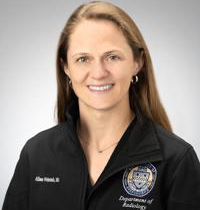
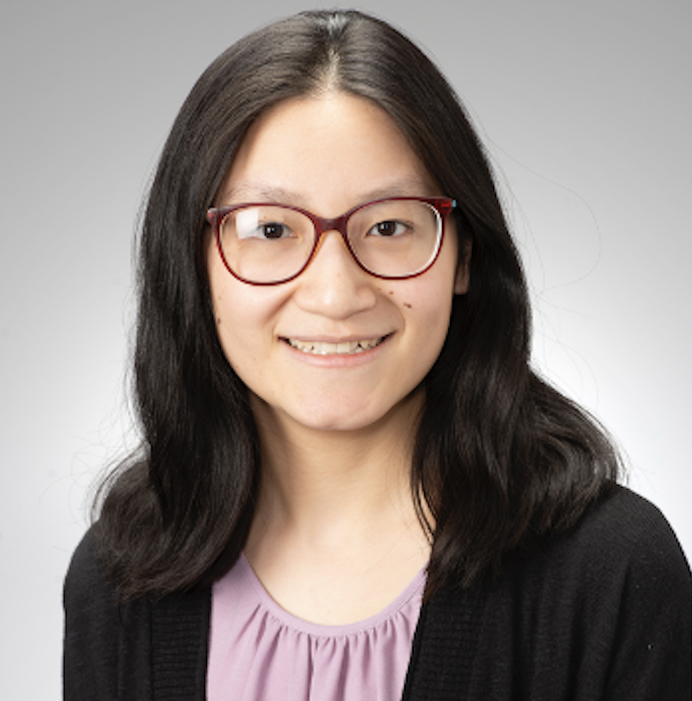

Leadership
Katie Traylor, DO
President
Assistant Professor, Neuroradiology
Director of Head and Neck Imaging
University of Pittsburgh Medical Center
Kimberly Rongo, DO
Vice President
Assistant Professor, Neuroradiology
Allegheny Health Network
Neiladri Khan, DO
Secretary
Assistant Professor, Neuroradiology
Allegheny Health Network

Allison Weinstock, MD
Treasurer
Assistant Professor, Musculoskeletal Radiology
University of Pittsburgh Medical Center

Christine Lin, MD
Webmaster
Radiology Resident
University of Pittsburgh Medical Center
Past Presidents:
| 2023 - 2024 | Kyle Cothron, MD |
| Allegheny Health Network | |
| 2018 - 2019 | Paul Klepchick, MD |
| Allegheny Health Network | |
| 2017 - 2018 | William Delfyett, MD |
| University of Pittsburgh Medical Center | |
| 2016 - 2017 | Matthew Heller, MD |
| University of Pittsburgh Medical Center | |
| 2015 - 2016 | Jon Sweany, MD |
| Radiology Consultants | |
| 2014 - 2015 | Michael Goldberg, MD |
| Allegheny Radiology Associates | |
| 2013 - 2014 | Vikas Agarwal, MD |
| University of Pittsburgh Medical Center | |
| 2012 - 2013 | Sherri Chafin, MD |
| St. Clair Hospital | |
| 2011 - 2012 | Michael Spearman, MD |
| Western Pennsylvania Hospital | |
| 2010 - 2011 | Samir Shah, MD |
| vRad | |
| 2008 - 2010 | Todd Hertzberg, MD |
| 2007 - 2008 | Jim Backstrom, MD |
| 2004 - 2007 | Sanjeev Katyal, MD |
| Radiology Associates | |
| 2003 - 2004 | Barbara Ward, MD |
| Western Pennsylvania Hospital | |
| 2001 - 2003 | Thomas Chang, MD |
| Weinstein Imaging Associates | |
| 2000 - 2001 | David Buck, MD |